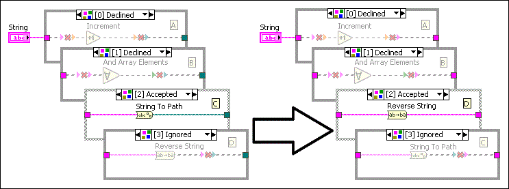

Complete the following steps to rearrange subdiagrams for most structures:
For Case structures, you also can rearrange the cases by swapping or shifting the cases.
To rearrange the frames in a Stacked Sequence structure, right-click the structure border, select Make This Frame, and select a new frame number from the shortcut menu.
Consider the following issues when you rearrange the subdiagrams of a structure:
Rearranging the subdiagrams in a Type Specialization structure affects the subdiagram labels and how the VI runs. This is because the Type Specialization structure attempts to compile each subdiagram in order and declines subdiagrams with syntax errors. It accepts the first subdiagram with no syntax error and ignores the remaining subdiagrams.
In the following example, the Type Specialization structure has subdiagrams A, B, C, and D. It accepts subdiagram C and ignores subdiagram D. If you switch subdiagrams C and D, the indexes of subdiagrams C and D get switched. The structure accepts subdiagram D and ignores subdiagram C because the structure compiles subdiagram D with no error before attempting to compile subdiagram C.
